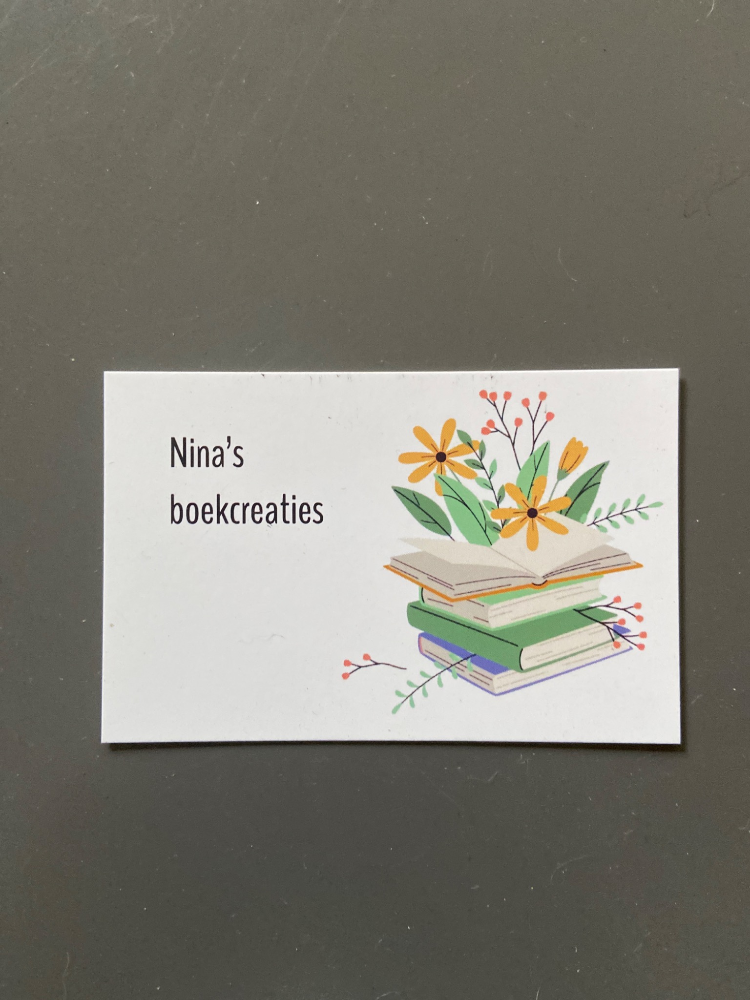

Mijn creaties
Een selectie van mijn boekcreaties. Elk werk ontstaat pagina voor pagina en kan als inspiratie dienen voor jouw eigen persoonlijke ontwerp.


Unieke creaties, met zorg en liefde gevouwen uit boeken. Van bloemen en dieren tot persoonlijke ontwerpen voor een bijzonder cadeau.
Bekijk mijn creatiesBestelling aanvragen
Een selectie van mijn boekcreaties. Elk werk ontstaat pagina voor pagina en kan als inspiratie dienen voor jouw eigen persoonlijke ontwerp.
Boeken krijgen bij Nina’s boekcreaties een bijzonder tweede leven. Door pagina’s zorgvuldig te vouwen en te vormen ontstaan decoratieve figuren, teksten en persoonlijke ontwerpen. Zoek je een uniek cadeau of heb je zelf een idee? Neem gerust contact op om de mogelijkheden te bespreken.
Vertel me wat je in gedachten hebt. Een naam, dier, bloem, gelegenheid of ander persoonlijk idee: samen bekijken we wat mogelijk is.
Prijs en mogelijkheden worden besproken op basis van het gewenste ontwerp.